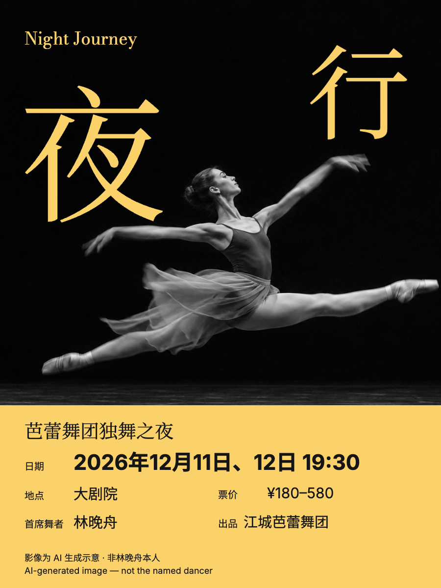
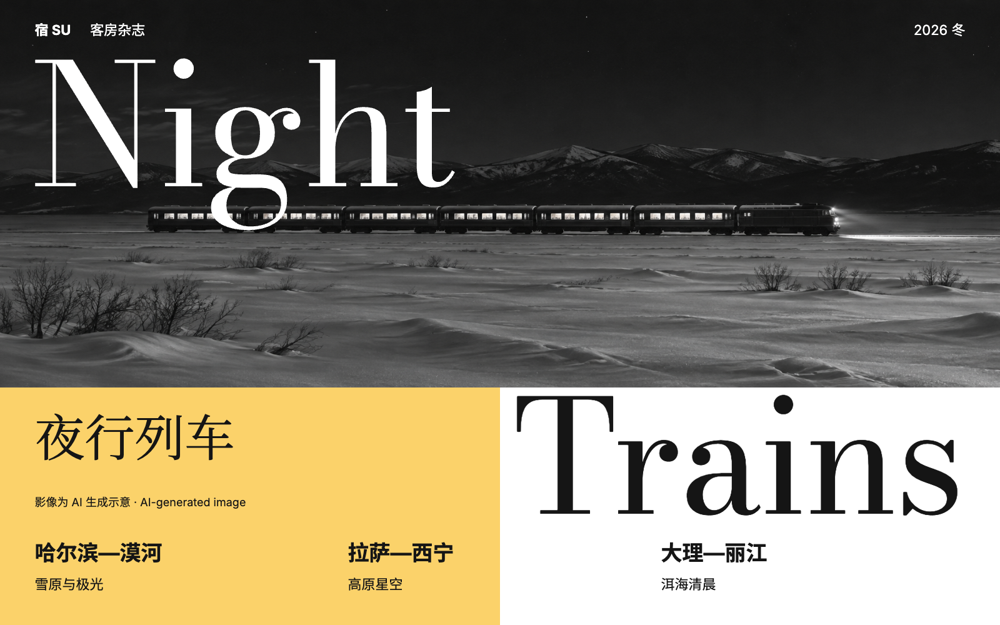
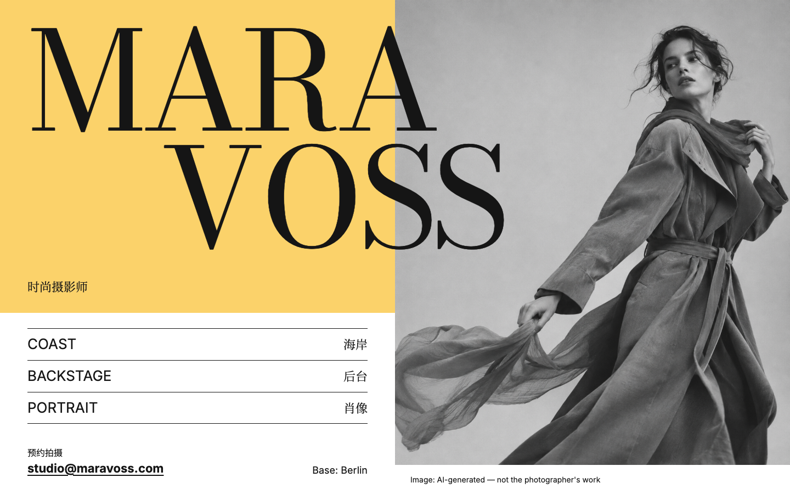
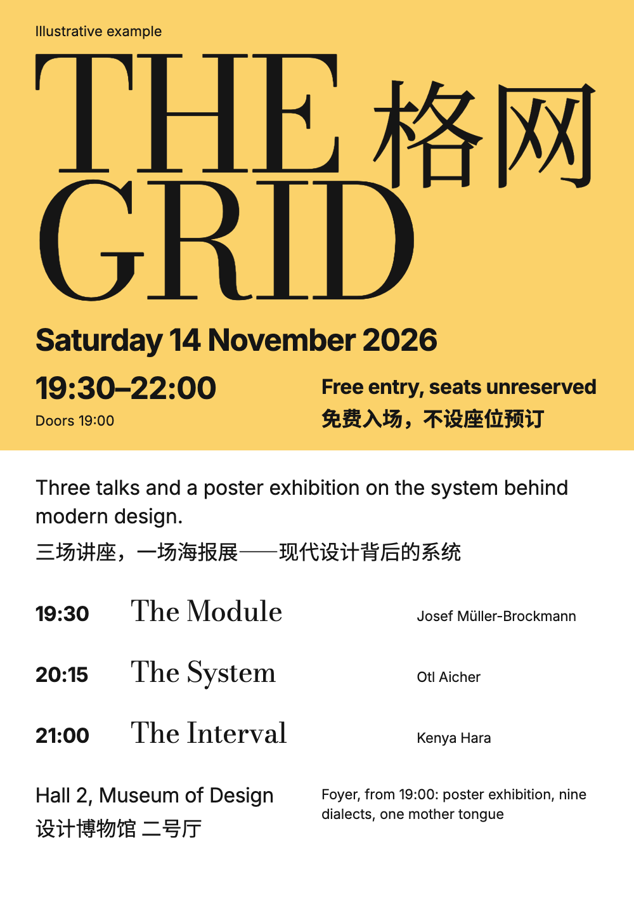

<!doctype html><html lang="zh-CN"><meta charset="utf-8"><meta name="viewport" content="width=device-width,initial-scale=1"><title>Brodovitch · Schönbrunn editorial</title><style>*{box-sizing:border-box}body{margin:0;background:#e8e8e8;color:#151515;font:16px/1.6 system-ui}header,main{max-width:1600px;margin:auto;padding:32px}header{background:#FBD26A}h1{margin:0;font-size:30px}p{margin:12px 0}nav{display:flex;gap:22px;flex-wrap:wrap}a{color:inherit}main{display:grid;grid-template-columns:repeat(2,minmax(0,1fr));gap:36px}article{min-width:0}h2{font-size:16px;font-weight:500;margin:0 0 12px}img{display:block;width:100%;height:auto}@media(max-width:720px){header,main{padding:24px}main{grid-template-columns:1fr}}</style><header><h1>Schönbrunn editorial</h1><p>申布伦黄 · Bodoni Moda × 思源宋体。点击成图打开自包含 HTML。</p><nav><a href="DESIGN.md">DESIGN.md</a><a href="README.md">成品索引</a><a href="folio-house-study/gallery.html">folio house 成品集</a></nav></header><main><article><h2>夜行 · 芭蕾海报</h2><a href="ballet/poster-ballet.html"></a></article><article><h2>夜行列车 · 编辑跨页</h2><a href="nighttrain/spread-nighttrain.html"></a></article><article><h2>MARA VOSS · 摄影师作品页</h2><a href="portfolio/web-portfolio.html"></a></article><article><h2>THE GRID · 活动海报</h2><a href="the-grid/poster.html"></a></article></main></html>
